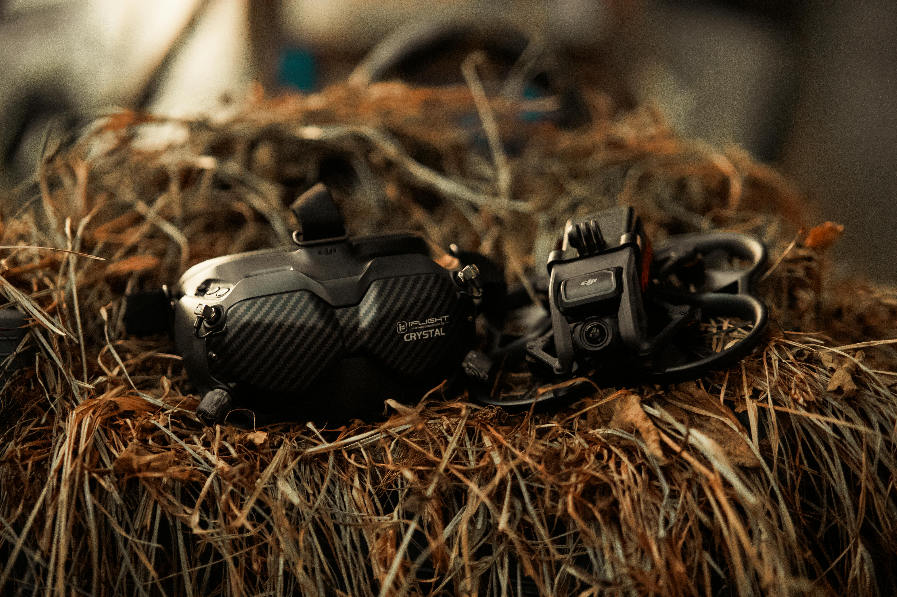
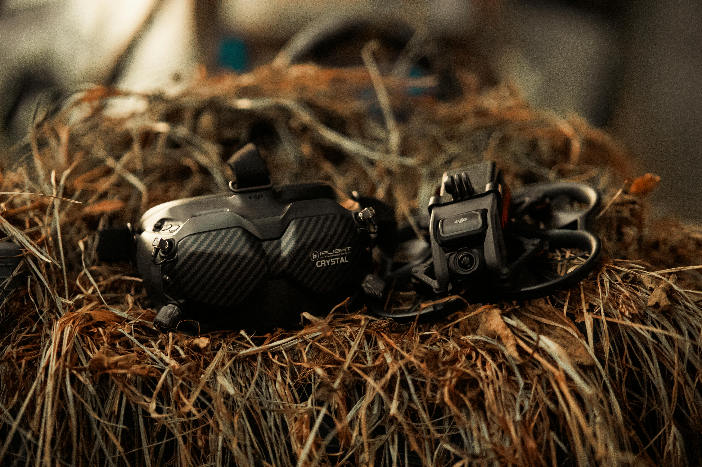
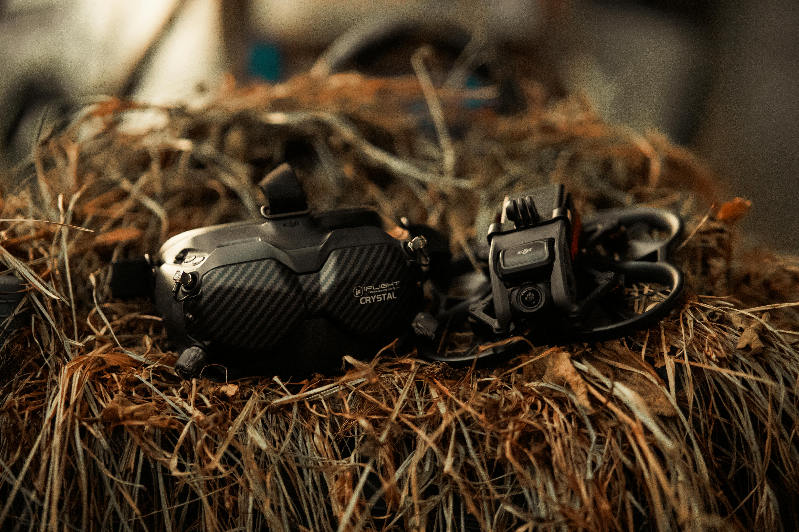

FPV (First Person View) dronovi omogućavaju pilotima da vide iz perspektive drona, koristeći kameru montiranu na letelici i video prijemnik sa naočarima ili ekranom. Ova vrsta dronova je popularna za trke, akrobacije i snimanje iz vazduha.
Priprema i Bezbednost
Proveri opremu pre svakog leta proveri sve komponente drona i kontrolera. Kalibriši dron prema uputstvima proizvođača. Leti na otvorenim i bezbednim prostorima, daleko od ljudi, životinja i prepreka. Koristi zaštitne naočare i odgovarajuću odeću.
Pravni Aspekti
Registracija dron kod nadležnih organa ako je potrebno. Pridržavaj se lokalnih zakona i propisa o letenju dronovima. Za letenje u određenim zonama može biti potrebna posebna dozvola.
Korisni Saveti
Pridruži se FPV zajednicama online ili lokalnim klubovima za podršku i savete. Vežbaj često, ali počni sa malim koracima. Koristi FPV simulatore na računaru za dodatno vežbanje bez rizika.
Zaključak
FPV dronovi pružaju uzbudljivo iskustvo letenja i snimanja iz vazduha. Uz odgovarajuću opremu, veštine i pridržavanje pravila, brzo ćeš postati vešt pilot. Srećno letenje!
